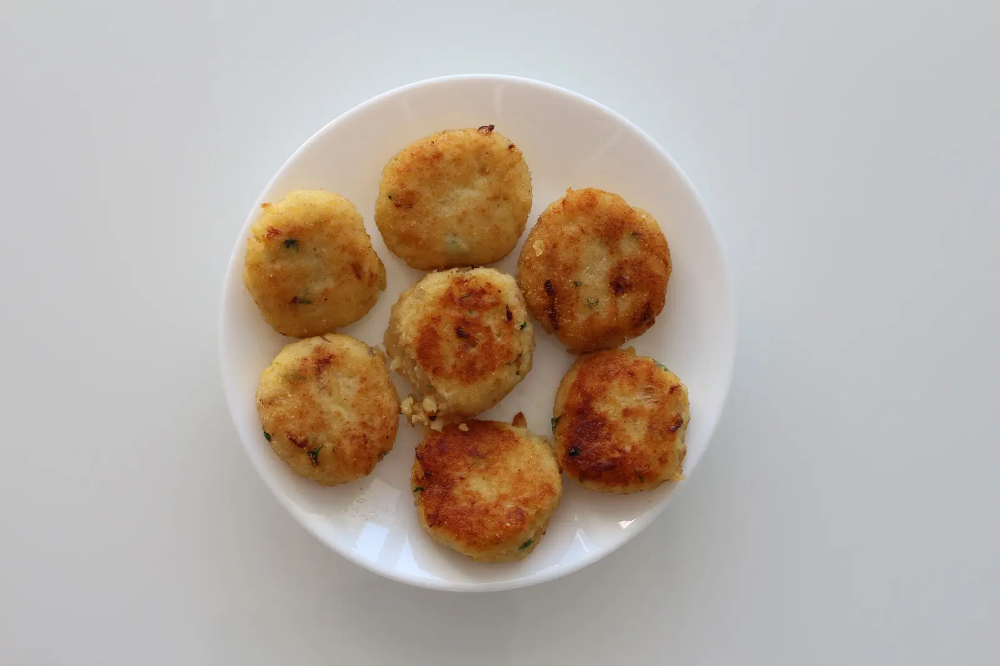

Potato Patties

- Potatoes — 500 g (3 medium; about 3 cups grated)
- Onion — 1 small (optional)
- Fresh herbs — to taste (for example, finely chopped dill or parsley)
- Vegetable oil — 30 ml (2 tablespoons)
- Butter — 15 g (1 tablespoon)
- Egg — 1 piece
- Flour or cornstarch — 1 and a half tablespoons
- Salt — a small pinch
- Spices — to taste (for example, paprika and garlic powder — 1 gram or 1 level teaspoon each)
-
1
Grate the raw potatoes on a coarse grater (or boil potatoes in their skins, cool completely, peel, and grate). If using raw potatoes, sprinkle with salt and let them sit for 5-10 minutes.
-
2
Squeeze the grated raw potatoes well to remove excess liquid (or blot dry). Then combine them in a bowl with the egg, flour or cornstarch, finely chopped onion (if using), fresh herbs, a pinch of salt, and any spices you enjoy. Mix until smooth and cohesive.
-
3
Shape medium patties about 1.5 cm thick with slightly moistened hands.
-
4
Heat the vegetable oil and butter in a skillet over medium heat. Place the patties in the pan without crowding and fry for 2-3 minutes on the first side without flipping too early, until a crispy golden crust forms.
-
5
Flip carefully and fry for another 2-3 minutes (slightly longer if using raw potatoes) until golden brown on both sides and tender inside.